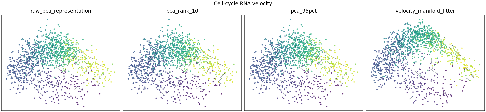
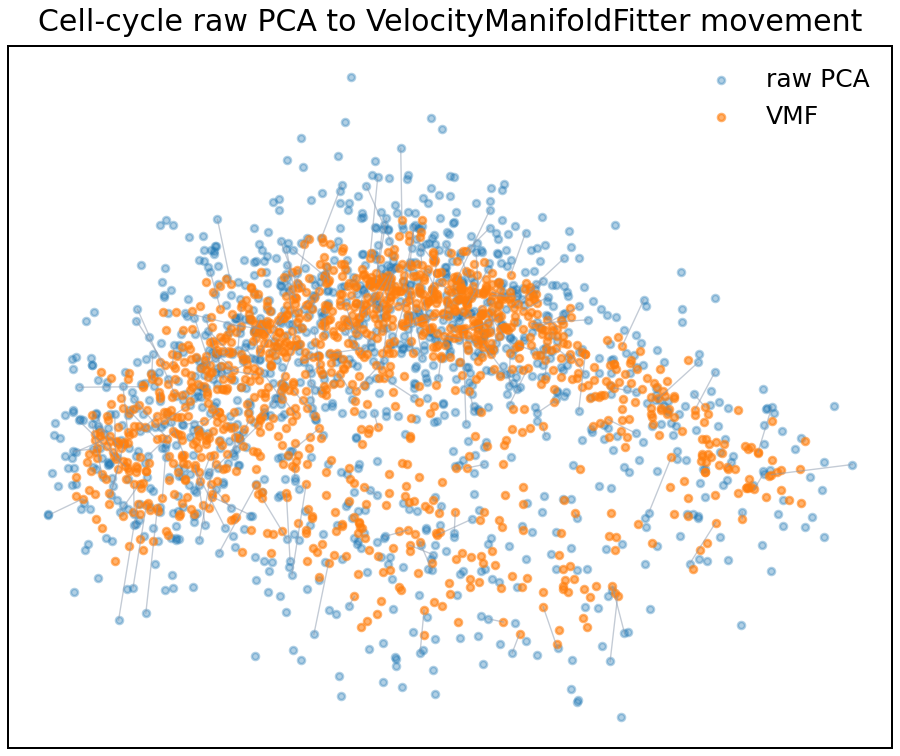
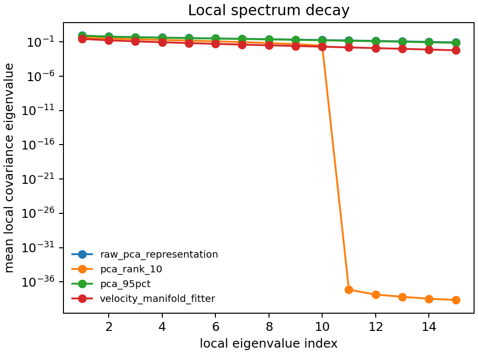
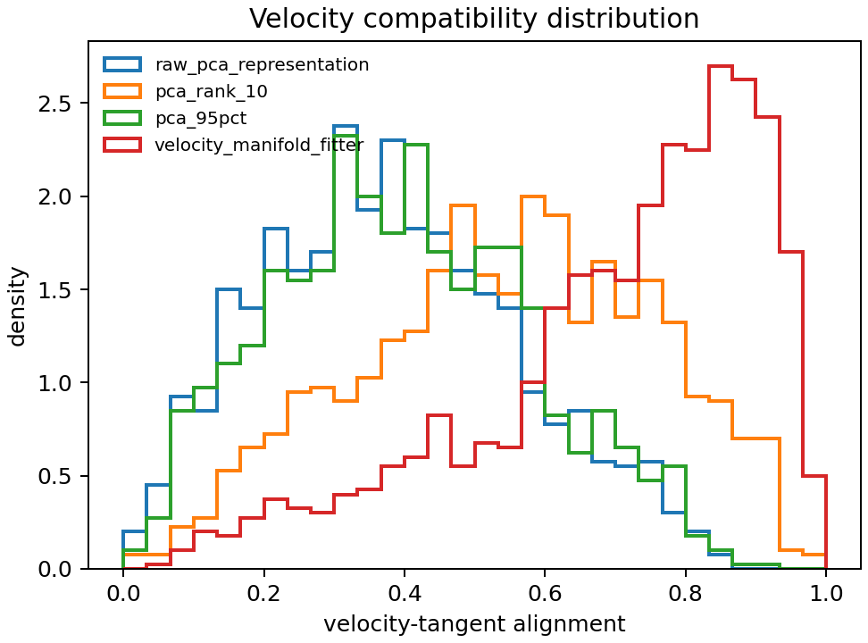

Application Geometry Report
Run Configuration
Generated at 2026-06-22T00:33:00.
Cell-cycle data source: /Users/eurus2003/Downloads/RNA velocity/ManfitVelo/data/cell_cycle. Rows analyzed: 1200.
Metrics are computed in the selected PCA representation, not against a ground-truth manifold.
| dataset | representation_dim | intrinsic_dim | max_cells | seed | n_neighbors | fit_neighbors | fit_iterations | eta_g | theta | kappa | include_local_pca | output_dir |
|---|---|---|---|---|---|---|---|---|---|---|---|---|
| cell_cycle | 30 | 2 | 1200 | 0 | 25 | 25 | 5 | 0.35 | 0.15 | 1 | True | /Users/eurus2003/Downloads/RNA velocity/ManfitVelo/reports/application_geometry |
Metric Definitions
Local low-dimensionality metrics summarize neighborhood covariance spectra. Lower normal energy and lower effective dimension can indicate cleaner local geometry, but excessive reduction can indicate collapse.
Velocity compatibility metrics measure whether velocity vectors lie in local tangent spaces, point toward nearby states, and vary smoothly among neighbors.
Movement and preservation metrics quantify how aggressively a method moves cells and whether it preserves the raw PCA neighborhood structure.
Cell-cycle RNA velocity
Summary metrics
| method | normal_energy_ratio_mean_mean | normal_energy_ratio_mean_std | normal_energy_ratio_mean_count | normal_energy_ratio_median_mean | normal_energy_ratio_median_std | normal_energy_ratio_median_count | normal_energy_ratio_q90_mean | normal_energy_ratio_q90_std | normal_energy_ratio_q90_count | tangent_energy_ratio_mean_mean | tangent_energy_ratio_mean_std | tangent_energy_ratio_mean_count | tangent_energy_ratio_median_mean | tangent_energy_ratio_median_std | tangent_energy_ratio_median_count | tangent_energy_ratio_q10_mean | tangent_energy_ratio_q10_std | tangent_energy_ratio_q10_count | local_spectral_gap_mean_mean | local_spectral_gap_mean_std | local_spectral_gap_mean_count | local_spectral_gap_median_mean | local_spectral_gap_median_std | local_spectral_gap_median_count | local_spectral_gap_q10_mean | local_spectral_gap_q10_std | local_spectral_gap_q10_count | local_effective_dimension_mean_mean | local_effective_dimension_mean_std | local_effective_dimension_mean_count | local_effective_dimension_median_mean | local_effective_dimension_median_std | local_effective_dimension_median_count | local_effective_dimension_q10_mean | local_effective_dimension_q10_std | local_effective_dimension_q10_count | local_effective_dimension_q90_mean | local_effective_dimension_q90_std | local_effective_dimension_q90_count | velocity_tangent_alignment_mean_mean | velocity_tangent_alignment_mean_std | velocity_tangent_alignment_mean_count | velocity_tangent_alignment_median_mean | velocity_tangent_alignment_median_std | velocity_tangent_alignment_median_count | velocity_tangent_alignment_q10_mean | velocity_tangent_alignment_q10_std | velocity_tangent_alignment_q10_count | velocity_tangent_alignment_zero_velocity_fraction_mean | velocity_tangent_alignment_zero_velocity_fraction_std | velocity_tangent_alignment_zero_velocity_fraction_count | velocity_neighbor_direction_agreement_mean_mean | velocity_neighbor_direction_agreement_mean_std | velocity_neighbor_direction_agreement_mean_count | velocity_neighbor_direction_agreement_median_mean | velocity_neighbor_direction_agreement_median_std | velocity_neighbor_direction_agreement_median_count | velocity_neighbor_direction_agreement_q10_mean | velocity_neighbor_direction_agreement_q10_std | velocity_neighbor_direction_agreement_q10_count | velocity_neighbor_direction_agreement_zero_velocity_fraction_mean | velocity_neighbor_direction_agreement_zero_velocity_fraction_std | velocity_neighbor_direction_agreement_zero_velocity_fraction_count | velocity_smoothness_mean_mean | velocity_smoothness_mean_std | velocity_smoothness_mean_count | velocity_smoothness_median_mean | velocity_smoothness_median_std | velocity_smoothness_median_count | velocity_smoothness_zero_velocity_fraction_mean | velocity_smoothness_zero_velocity_fraction_std | velocity_smoothness_zero_velocity_fraction_count | displacement_mean_mean | displacement_mean_std | displacement_mean_count | displacement_median_mean | displacement_median_std | displacement_median_count | displacement_q90_mean | displacement_q90_std | displacement_q90_count | displacement_relative_to_local_scale_mean_mean | displacement_relative_to_local_scale_mean_std | displacement_relative_to_local_scale_mean_count | displacement_relative_to_local_scale_q90_mean | displacement_relative_to_local_scale_q90_std | displacement_relative_to_local_scale_q90_count | knn_overlap_mean_mean | knn_overlap_mean_std | knn_overlap_mean_count | knn_overlap_median_mean | knn_overlap_median_std | knn_overlap_median_count | knn_overlap_q10_mean | knn_overlap_q10_std | knn_overlap_q10_count | pairwise_distance_correlation_mean | pairwise_distance_correlation_std | pairwise_distance_correlation_count | trustworthiness_mean | trustworthiness_std | trustworthiness_count | failure_count |
|---|---|---|---|---|---|---|---|---|---|---|---|---|---|---|---|---|---|---|---|---|---|---|---|---|---|---|---|---|---|---|---|---|---|---|---|---|---|---|---|---|---|---|---|---|---|---|---|---|---|---|---|---|---|---|---|---|---|---|---|---|---|---|---|---|---|---|---|---|---|---|---|---|---|---|---|---|---|---|---|---|---|---|---|---|---|---|---|---|---|---|---|---|---|---|---|---|---|---|---|---|---|---|---|
| local_pca_position | 0.56931 | NaN | 1 | 0.58382 | NaN | 1 | 0.6443 | NaN | 1 | 0.43069 | NaN | 1 | 0.41618 | NaN | 1 | 0.3557 | NaN | 1 | 1.3884 | NaN | 1 | 1.3284 | NaN | 1 | 1.1182 | NaN | 1 | 7.4052 | NaN | 1 | 7.6256 | NaN | 1 | 5.4311 | NaN | 1 | 9.0638 | NaN | 1 | 0.40616 | NaN | 1 | 0.38676 | NaN | 1 | 0.14653 | NaN | 1 | 0 | NaN | 1 | 0.37462 | NaN | 1 | 0.37298 | NaN | 1 | 0.18064 | NaN | 1 | 0 | NaN | 1 | 0.24808 | NaN | 1 | 0.24346 | NaN | 1 | 0 | NaN | 1 | 2.0565 | NaN | 1 | 2.0065 | NaN | 1 | 2.7259 | NaN | 1 | 0.64999 | NaN | 1 | 0.86157 | NaN | 1 | 0.4306 | NaN | 1 | 0.44 | NaN | 1 | 0.32 | NaN | 1 | 0.81745 | NaN | 1 | 0.95162 | NaN | 1 | 0 |
| pca_90pct | 0.68478 | NaN | 1 | 0.68883 | NaN | 1 | 0.72211 | NaN | 1 | 0.31522 | NaN | 1 | 0.31117 | NaN | 1 | 0.27789 | NaN | 1 | 1.2207 | NaN | 1 | 1.1982 | NaN | 1 | 1.0676 | NaN | 1 | 10.538 | NaN | 1 | 10.632 | NaN | 1 | 9.3323 | NaN | 1 | 11.639 | NaN | 1 | 0.41149 | NaN | 1 | 0.39421 | NaN | 1 | 0.17181 | NaN | 1 | 0 | NaN | 1 | 0.35489 | NaN | 1 | 0.3643 | NaN | 1 | 0.15026 | NaN | 1 | 0 | NaN | 1 | 0.24334 | NaN | 1 | 0.25724 | NaN | 1 | 0 | NaN | 1 | 0.99688 | NaN | 1 | 0.97294 | NaN | 1 | 1.4357 | NaN | 1 | 0.31509 | NaN | 1 | 0.45378 | NaN | 1 | 0.76027 | NaN | 1 | 0.76 | NaN | 1 | 0.64 | NaN | 1 | 0.98967 | NaN | 1 | 0.99517 | NaN | 1 | 0 |
| pca_95pct | 0.69766 | NaN | 1 | 0.70025 | NaN | 1 | 0.73405 | NaN | 1 | 0.30234 | NaN | 1 | 0.29975 | NaN | 1 | 0.26595 | NaN | 1 | 1.2131 | NaN | 1 | 1.1905 | NaN | 1 | 1.0661 | NaN | 1 | 11.13 | NaN | 1 | 11.203 | NaN | 1 | 9.8667 | NaN | 1 | 12.257 | NaN | 1 | 0.40041 | NaN | 1 | 0.39118 | NaN | 1 | 0.15921 | NaN | 1 | 0 | NaN | 1 | 0.33762 | NaN | 1 | 0.34468 | NaN | 1 | 0.13636 | NaN | 1 | 0 | NaN | 1 | 0.23236 | NaN | 1 | 0.2475 | NaN | 1 | 0 | NaN | 1 | 0.64627 | NaN | 1 | 0.59204 | NaN | 1 | 1.08 | NaN | 1 | 0.20427 | NaN | 1 | 0.34135 | NaN | 1 | 0.848 | NaN | 1 | 0.84 | NaN | 1 | 0.76 | NaN | 1 | 0.99578 | NaN | 1 | 0.99808 | NaN | 1 | 0 |
| pca_rank_10 | 0.56045 | NaN | 1 | 0.56299 | NaN | 1 | 0.60894 | NaN | 1 | 0.43955 | NaN | 1 | 0.43701 | NaN | 1 | 0.39106 | NaN | 1 | 1.2915 | NaN | 1 | 1.2578 | NaN | 1 | 1.0918 | NaN | 1 | 6.5319 | NaN | 1 | 6.5825 | NaN | 1 | 5.7961 | NaN | 1 | 7.2272 | NaN | 1 | 0.54344 | NaN | 1 | 0.55302 | NaN | 1 | 0.25041 | NaN | 1 | 0 | NaN | 1 | 0.53884 | NaN | 1 | 0.55957 | NaN | 1 | 0.29172 | NaN | 1 | 0 | NaN | 1 | 0.30661 | NaN | 1 | 0.33937 | NaN | 1 | 0 | NaN | 1 | 2.1263 | NaN | 1 | 2.0819 | NaN | 1 | 2.8173 | NaN | 1 | 0.67206 | NaN | 1 | 0.89047 | NaN | 1 | 0.4083 | NaN | 1 | 0.4 | NaN | 1 | 0.24 | NaN | 1 | 0.91788 | NaN | 1 | 0.94468 | NaN | 1 | 0 |
| pca_rank_20 | 0.66563 | NaN | 1 | 0.67008 | NaN | 1 | 0.70393 | NaN | 1 | 0.33437 | NaN | 1 | 0.32992 | NaN | 1 | 0.29607 | NaN | 1 | 1.2282 | NaN | 1 | 1.2008 | NaN | 1 | 1.0711 | NaN | 1 | 9.6833 | NaN | 1 | 9.7834 | NaN | 1 | 8.6018 | NaN | 1 | 10.638 | NaN | 1 | 0.43396 | NaN | 1 | 0.42775 | NaN | 1 | 0.1742 | NaN | 1 | 0 | NaN | 1 | 0.3857 | NaN | 1 | 0.39553 | NaN | 1 | 0.18433 | NaN | 1 | 0 | NaN | 1 | 0.24191 | NaN | 1 | 0.25018 | NaN | 1 | 0 | NaN | 1 | 1.3588 | NaN | 1 | 1.3174 | NaN | 1 | 1.8661 | NaN | 1 | 0.42949 | NaN | 1 | 0.58982 | NaN | 1 | 0.66437 | NaN | 1 | 0.68 | NaN | 1 | 0.52 | NaN | 1 | 0.97787 | NaN | 1 | 0.98891 | NaN | 1 | 0 |
| pca_rank_30 | 0.70714 | NaN | 1 | 0.71022 | NaN | 1 | 0.74431 | NaN | 1 | 0.29286 | NaN | 1 | 0.28978 | NaN | 1 | 0.25569 | NaN | 1 | 1.2067 | NaN | 1 | 1.1755 | NaN | 1 | 1.0677 | NaN | 1 | 11.602 | NaN | 1 | 11.675 | NaN | 1 | 10.307 | NaN | 1 | 12.827 | NaN | 1 | 0.38024 | NaN | 1 | 0.36933 | NaN | 1 | 0.14515 | NaN | 1 | 0 | NaN | 1 | 0.3197 | NaN | 1 | 0.32105 | NaN | 1 | 0.12782 | NaN | 1 | 0 | NaN | 1 | 0.22216 | NaN | 1 | 0.23313 | NaN | 1 | 0 | NaN | 1 | 4.5296e-15 | NaN | 1 | 4.3975e-15 | NaN | 1 | 6.1347e-15 | NaN | 1 | 1.4317e-15 | NaN | 1 | 1.939e-15 | NaN | 1 | 1 | NaN | 1 | 1 | NaN | 1 | 1 | NaN | 1 | 1 | NaN | 1 | 1 | NaN | 1 | 0 |
| raw_pca_representation | 0.70714 | NaN | 1 | 0.71022 | NaN | 1 | 0.74431 | NaN | 1 | 0.29286 | NaN | 1 | 0.28978 | NaN | 1 | 0.25569 | NaN | 1 | 1.2067 | NaN | 1 | 1.1755 | NaN | 1 | 1.0677 | NaN | 1 | 11.602 | NaN | 1 | 11.675 | NaN | 1 | 10.307 | NaN | 1 | 12.827 | NaN | 1 | 0.38024 | NaN | 1 | 0.36933 | NaN | 1 | 0.14515 | NaN | 1 | 0 | NaN | 1 | 0.3197 | NaN | 1 | 0.32105 | NaN | 1 | 0.12782 | NaN | 1 | 0 | NaN | 1 | 0.22216 | NaN | 1 | 0.23313 | NaN | 1 | 0 | NaN | 1 | 0 | NaN | 1 | 0 | NaN | 1 | 0 | NaN | 1 | 0 | NaN | 1 | 0 | NaN | 1 | 1 | NaN | 1 | 1 | NaN | 1 | 1 | NaN | 1 | 1 | NaN | 1 | 1 | NaN | 1 | 0 |
| velocity_manifold_fitter | 0.54432 | NaN | 1 | 0.55101 | NaN | 1 | 0.62021 | NaN | 1 | 0.45568 | NaN | 1 | 0.44899 | NaN | 1 | 0.37979 | NaN | 1 | 1.4205 | NaN | 1 | 1.362 | NaN | 1 | 1.1312 | NaN | 1 | 6.8328 | NaN | 1 | 6.8793 | NaN | 1 | 5.1935 | NaN | 1 | 8.396 | NaN | 1 | 0.70436 | NaN | 1 | 0.75791 | NaN | 1 | 0.3928 | NaN | 1 | 0 | NaN | 1 | 0.62185 | NaN | 1 | 0.65742 | NaN | 1 | 0.357 | NaN | 1 | 0 | NaN | 1 | 0.26753 | NaN | 1 | 0.28681 | NaN | 1 | 0 | NaN | 1 | 1.8457 | NaN | 1 | 1.7839 | NaN | 1 | 2.4725 | NaN | 1 | 0.58336 | NaN | 1 | 0.7815 | NaN | 1 | 0.45063 | NaN | 1 | 0.44 | NaN | 1 | 0.32 | NaN | 1 | 0.84792 | NaN | 1 | 0.95663 | NaN | 1 | 0 |
Long-form metrics
| method | status | error | normal_energy_ratio_mean | normal_energy_ratio_median | normal_energy_ratio_q90 | tangent_energy_ratio_mean | tangent_energy_ratio_median | tangent_energy_ratio_q10 | local_spectral_gap_mean | local_spectral_gap_median | local_spectral_gap_q10 | local_effective_dimension_mean | local_effective_dimension_median | local_effective_dimension_q10 | local_effective_dimension_q90 | velocity_tangent_alignment_mean | velocity_tangent_alignment_median | velocity_tangent_alignment_q10 | velocity_tangent_alignment_zero_velocity_fraction | velocity_neighbor_direction_agreement_mean | velocity_neighbor_direction_agreement_median | velocity_neighbor_direction_agreement_q10 | velocity_neighbor_direction_agreement_zero_velocity_fraction | velocity_smoothness_mean | velocity_smoothness_median | velocity_smoothness_zero_velocity_fraction | displacement_mean | displacement_median | displacement_q90 | displacement_relative_to_local_scale_mean | displacement_relative_to_local_scale_q90 | knn_overlap_mean | knn_overlap_median | knn_overlap_q10 | pairwise_distance_correlation | trustworthiness |
|---|---|---|---|---|---|---|---|---|---|---|---|---|---|---|---|---|---|---|---|---|---|---|---|---|---|---|---|---|---|---|---|---|---|---|---|---|
| raw_pca_representation | ok | 0.70714 | 0.71022 | 0.74431 | 0.29286 | 0.28978 | 0.25569 | 1.2067 | 1.1755 | 1.0677 | 11.602 | 11.675 | 10.307 | 12.827 | 0.38024 | 0.36933 | 0.14515 | 0 | 0.3197 | 0.32105 | 0.12782 | 0 | 0.22216 | 0.23313 | 0 | 0 | 0 | 0 | 0 | 0 | 1 | 1 | 1 | 1 | 1 | |
| pca_rank_10 | ok | 0.56045 | 0.56299 | 0.60894 | 0.43955 | 0.43701 | 0.39106 | 1.2915 | 1.2578 | 1.0918 | 6.5319 | 6.5825 | 5.7961 | 7.2272 | 0.54344 | 0.55302 | 0.25041 | 0 | 0.53884 | 0.55957 | 0.29172 | 0 | 0.30661 | 0.33937 | 0 | 2.1263 | 2.0819 | 2.8173 | 0.67206 | 0.89047 | 0.4083 | 0.4 | 0.24 | 0.91788 | 0.94468 | |
| pca_rank_20 | ok | 0.66563 | 0.67008 | 0.70393 | 0.33437 | 0.32992 | 0.29607 | 1.2282 | 1.2008 | 1.0711 | 9.6833 | 9.7834 | 8.6018 | 10.638 | 0.43396 | 0.42775 | 0.1742 | 0 | 0.3857 | 0.39553 | 0.18433 | 0 | 0.24191 | 0.25018 | 0 | 1.3588 | 1.3174 | 1.8661 | 0.42949 | 0.58982 | 0.66437 | 0.68 | 0.52 | 0.97787 | 0.98891 | |
| pca_rank_30 | ok | 0.70714 | 0.71022 | 0.74431 | 0.29286 | 0.28978 | 0.25569 | 1.2067 | 1.1755 | 1.0677 | 11.602 | 11.675 | 10.307 | 12.827 | 0.38024 | 0.36933 | 0.14515 | 0 | 0.3197 | 0.32105 | 0.12782 | 0 | 0.22216 | 0.23313 | 0 | 4.5296e-15 | 4.3975e-15 | 6.1347e-15 | 1.4317e-15 | 1.939e-15 | 1 | 1 | 1 | 1 | 1 | |
| pca_90pct | ok | 0.68478 | 0.68883 | 0.72211 | 0.31522 | 0.31117 | 0.27789 | 1.2207 | 1.1982 | 1.0676 | 10.538 | 10.632 | 9.3323 | 11.639 | 0.41149 | 0.39421 | 0.17181 | 0 | 0.35489 | 0.3643 | 0.15026 | 0 | 0.24334 | 0.25724 | 0 | 0.99688 | 0.97294 | 1.4357 | 0.31509 | 0.45378 | 0.76027 | 0.76 | 0.64 | 0.98967 | 0.99517 | |
| pca_95pct | ok | 0.69766 | 0.70025 | 0.73405 | 0.30234 | 0.29975 | 0.26595 | 1.2131 | 1.1905 | 1.0661 | 11.13 | 11.203 | 9.8667 | 12.257 | 0.40041 | 0.39118 | 0.15921 | 0 | 0.33762 | 0.34468 | 0.13636 | 0 | 0.23236 | 0.2475 | 0 | 0.64627 | 0.59204 | 1.08 | 0.20427 | 0.34135 | 0.848 | 0.84 | 0.76 | 0.99578 | 0.99808 | |
| local_pca_position | ok | 0.56931 | 0.58382 | 0.6443 | 0.43069 | 0.41618 | 0.3557 | 1.3884 | 1.3284 | 1.1182 | 7.4052 | 7.6256 | 5.4311 | 9.0638 | 0.40616 | 0.38676 | 0.14653 | 0 | 0.37462 | 0.37298 | 0.18064 | 0 | 0.24808 | 0.24346 | 0 | 2.0565 | 2.0065 | 2.7259 | 0.64999 | 0.86157 | 0.4306 | 0.44 | 0.32 | 0.81745 | 0.95162 | |
| velocity_manifold_fitter | ok | 0.54432 | 0.55101 | 0.62021 | 0.45568 | 0.44899 | 0.37979 | 1.4205 | 1.362 | 1.1312 | 6.8328 | 6.8793 | 5.1935 | 8.396 | 0.70436 | 0.75791 | 0.3928 | 0 | 0.62185 | 0.65742 | 0.357 | 0 | 0.26753 | 0.28681 | 0 | 1.8457 | 1.7839 | 2.4725 | 0.58336 | 0.7815 | 0.45063 | 0.44 | 0.32 | 0.84792 | 0.95663 |
PCA-space method overview

Raw-to-VMF movement paths

Mean local spectrum decay

Velocity-tangent alignment distribution

Geometry and velocity utility interpretation
Because no clean ground-truth manifold is available, these results should be interpreted as geometry-aware and velocity-aware utility metrics rather than reconstruction accuracy. Compared with raw PCA, VelocityManifoldFitter changed mean normal energy ratio from 0.7071 to 0.5443, velocity-tangent alignment from 0.3802 to 0.7044, and kNN overlap was 0.4506. Mean displacement was 1.846, or 0.5834 times the local scale. VMF exceeds PCA-rank-10 on velocity-tangent alignment (0.7044 vs 0.5434). VMF improves velocity-geometry compatibility, but this comes with a movement and neighborhood-preservation tradeoff.